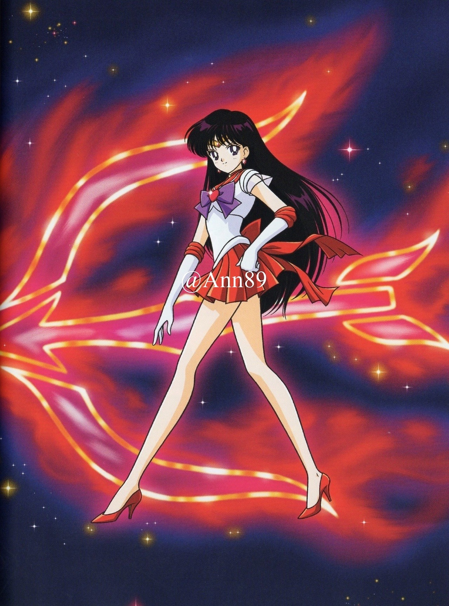

Sailor Mercury & Sailor Mars


Rei Hino
Rei Hino (火野 レイ, Hino Rei, called Raye Hino in the original English dub) is an elegant fourteen-year-old miko (English: shrine maiden). Because of her work as a Shinto priestess, Rei has limited precognition and can dispel or nullify evil using special ofuda scrolls, even in her civilian form.She transforms into Sailor Mars, the Guardian of Fire and Passion. She is very serious and focused, and easily becomes annoyed by Usagi's laziness, although she cares about her very much. In the anime adaptation, Rei is portrayed as boy-crazy and short-tempered, while in the manga and live-action series she is depicted as uninterested in romance and more self-controlled. She attends a private Catholic school separate from the other girls..
Sailor Mercury
Ami Mizuno (水野 亜美, Mizuno Ami, called Amy Anderson in the original English dub) is a quiet but intelligent fourteen-year-old bookworm in Usagi's class with a rumored IQ of 300. She can transform into Sailor Mercury, the Guardian of Water and Wisdom. Ami's shy exterior masks a passion for learning and taking care of the people around her.[13] She hopes to eventually become a doctor like her mother, and tends to be the practical one in the group. She is secretly a fan of pop culture and romance novels, and becomes embarrassed whenever this is pointed out. Ami also uses her handheld computer, which is capable of scanning and detecting virtually anything about which she requires information.